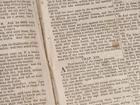
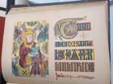
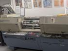
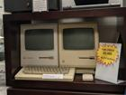
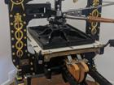
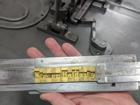

On a recent visit with my parents, we visited the Museum of Printing. Like the New Hampshire Telephone Museum described earlier, the exhibits here dovetailed very nicely with the book The Information: A History, A Theory, A Flood. From its About Page,
The Museum of Printing is dedicated to preserving the rich history of the graphic arts, printing and typesetting technology, and printing craftsmanship. In addition to many special collections and small exhibits, the Museum contains hundreds of antique printing, typesetting, and bindery machines, as well as a library of books and printing-related documents.
I highly recommend visiting this museum for its fascinating hands-on exhibits and the friendly knowledgeable staff who gladly answer questions and offer guided tours. The kinds of artifacts on display and the explanations accompanying them run both broad and deep. Someone even walked me through the process of making a cast of my name from molten metal in the same way an operator would prepare a page for mass production. Afterward they could melt it down again and repeat, but I got to keep mine!
Ancient Chinese printing technology
Symbols were selected from this wheel and used in something like a printing press. This technology predated the European printing press, but it was tightly controlled by the government and never spread widely.

Bible page from 1830
Bibles were an early priority for the printing press during the Protestant revolution and beyond. They played an important role in European and American society, and continue to play an important role for many today.

Colored illustration from a Bible
Many painstakingly colored illustrations from very old Bibles were on display here. I wish I understood the significance of the details in these illustrations better than I do.

Early color printer
This was one of the earlier electronic machines that could print in color at scale. The more modern machines displayed nearby illustrate the miniaturization this technology underwent.
Old computers
These memorable artifacts from my living past mark the beginning of an era of alternatives to printing text. My fascination with them also set the trajectory of my career path.

Ornate printing press
This massive ornate printing press near the entryway had a golden American Eagle at the top. It was among the most visually striking printing presses on display.

Printing my name
In a hands-on demo, we filled this mold with molten metal to create a stamp for printing my name. Whole pages of text were created this way, and the stamps recycled by melting them again.
Typewriters
My parents posing near a wall of typewriters similar to the one I used in childhood to type papers for school. I remember the smell of the ink, the feel of the keys, and fixing errors with the eraser of a pencil.